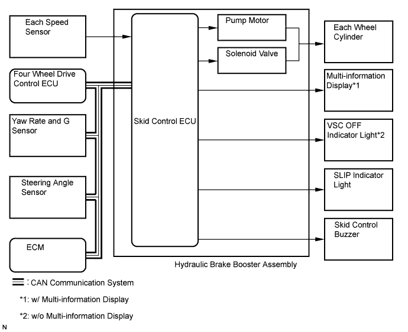
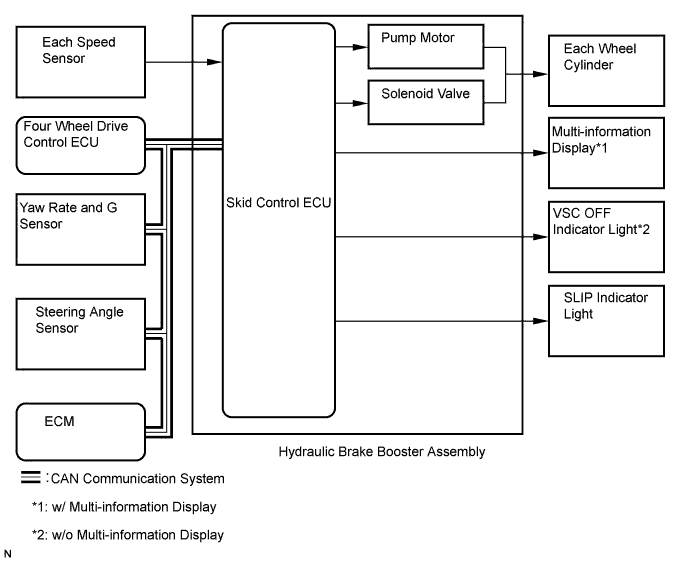
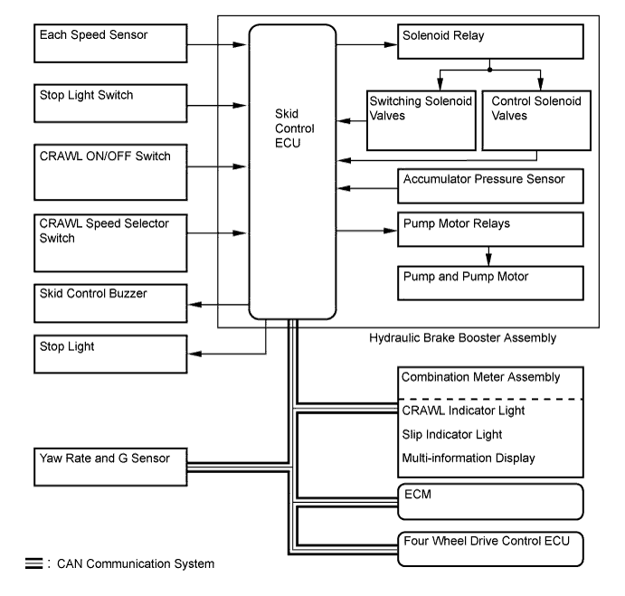
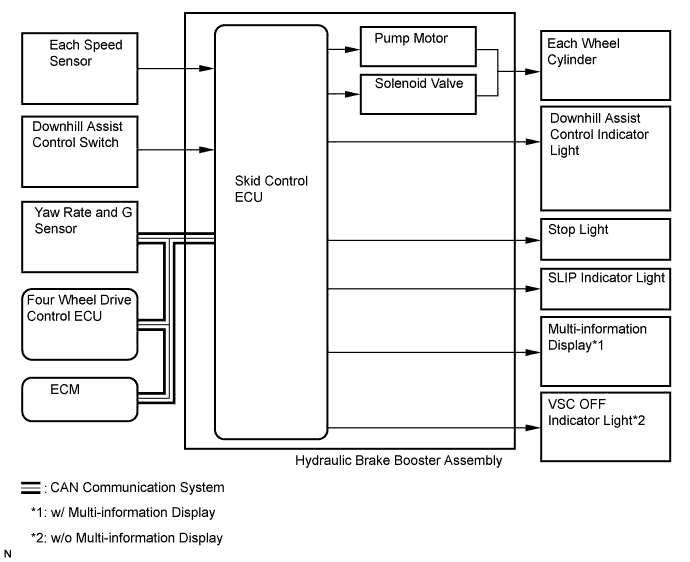
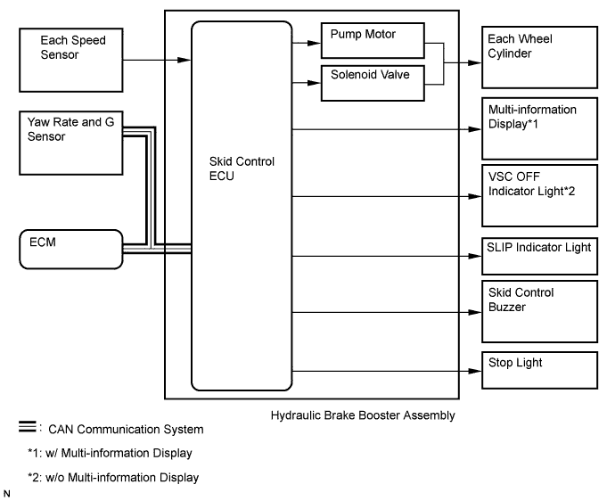

VEHICLE STABILITY CONTROL SYSTEM > SYSTEM DESCRIPTION |
| SYSTEM DESCRIPTION |
Multi-terrain ABS with EBD, BA, A-TRC, Hill-start Assist Control, CRAWL, Downhill Assist Control and VSC operation
The skid control ECU calculates vehicle stability based on the signals from the speed sensor, yaw rate and G sensor and steering angle sensor. In addition, it evaluates the results of the calculations to determine whether any control actions (control of the engine output torque by electronic throttle control and of the wheel brake pressure by the brake actuator) should be implemented.
The SLIP indicator blinks and the skid control buzzer sounds intermittently to inform the driver that the VSC system is operating. The SLIP indicator also blinks when A-TRC, CRAWL, Downhill Assist Control or Hill-start Assist Control is operating.
| ACTIVE SAFETY |
Multi-terrain ABS


EBD (Electronic Brake force Distribution)
The EBD control utilizes the ABS, realizing proper brake force distribution between the front and rear wheels in accordance with driving conditions.
In addition, when braking while cornering, it also controls the brake forces of the right and left wheels, helping to maintain vehicle behavior.

BA (Brake Assist)
The primary purpose of the brake assist system is to provide an auxiliary brake force to assist the driver who cannot generate a large enough brake force during emergency braking, thus helping to maximize the vehicle braking performance.

VSC (Vehicle Stability Control)
The VSC system helps prevent the vehicle from slipping sideways as a result of strong front wheel skid or strong rear wheel skid during cornering.

| DRIVING PERFORMANCE |
A-TRC (Active Traction Control)
The A-TRC system helps prevent the drive wheels from slipping if the driver presses down on the accelerator pedal excessively when starting off or accelerating on a slippery surface.
During rugged off-road driving, this function controls the engine output and the brake fluid pressure that is applied to the slipping wheel, and distributes the drive force that would have been lost through the slippage to the remaining wheels in order to achieve an LSD (Limited Slip Differential) effect.

CRAWL (CRAWL Control)
CRAWL control is a system that provides assistance when driving on bumpy off-road surfaces, slippery road surfaces, etc. When CRAWL control is operating, the engine output and braking force are controlled automatically to enable driving while maintaining a constant speed. As a result, the driver can concentrate on steering the vehicle without having to operate the accelerator and brake pedals very much.

 |
Downhill Assist Control
When the downhill assist control switch is pressed with the transfer in the low (L4) range and without accelerator and brake pedal operation, downhill assist control is activated to perform 4-wheel hydraulic pressure control in order to maintain a constant low vehicle speed without causing the wheels to become locked. Thus, the vehicle can descend a steep hill in a stable manner.

Hill-start Assist Control
When the vehicle starts off on a steep hill, hill-start assist control detects the backward descent of the vehicle and performs 4-wheel hydraulic pressure control to reduce the backward speed of the vehicle.
The hill-start assist control is operated for a maximum 5 seconds, then brake fluid pressure is gradually released and control completes.
